<title>Destacados: uso, marcas y pasos</title>
<meta name="viewport" content="width=device-width, initial-scale=1">
<meta name="claude:viewport-fit-sides" content="cover">
<link rel="preconnect" href="https://fonts.googleapis.com">
<link rel="preconnect" href="https://fonts.gstatic.com" crossorigin>
<link rel="stylesheet" href="https://fonts.googleapis.com/css2?family=Geist:wght@400;500;600&family=Geist+Mono:wght@400&family=Poppins:wght@600;700&display=swap">
<style>
    /* Comparador de la cuarta ronda de los destacados: seis versiones de En uso para Llegó, la marca animada de Llegó y
       de Tap In, y siete pasos entre portadas contra el actual. Cada maqueta es la portada real del home (captura a
       1440 x 900) con la vista reemplazada; todo se mide en unidades de contenedor (--u = 1 px de la portada) */
    :root {
        --negro: #0B0B0B; --papel: #E9E9E6; --gris-claro: #D9D9D6; --blanco: #F5F5F3;
        --tinta: #1A1A19; --tinta-2: #55554F; --tinta-3: #8A8A84; --linea-c: rgba(11, 11, 11, 0.1); --rec: #8C6A12;
        --sans: 'Geist', system-ui, sans-serif; --mono: 'Geist Mono', ui-monospace, monospace; --poppins: 'Poppins', 'Geist', sans-serif;
        --margen: clamp(16px, 2.2vw, 32px); --medianil: 16px;
        --ease: cubic-bezier(0.2, 0.7, 0.2, 1); --expo: cubic-bezier(0.16, 1, 0.3, 1);
        color-scheme: light;
    }
    * { box-sizing: border-box; }
    html, body { overflow-x: clip; }
    body { margin: 0; background: var(--papel); color: var(--tinta); font: 15px / 1.5 var(--sans); -webkit-font-smoothing: antialiased; }
    button, input { font: inherit; color: inherit; }
    :focus-visible { outline: 2px solid var(--negro); outline-offset: 3px; }
    img { display: block; max-width: 100%; }
    .mono { font: 400 12px / 1.4 var(--mono); }
    .grilla { display: grid; grid-template-columns: repeat(12, minmax(0, 1fr)); column-gap: var(--medianil); padding-left: max(var(--margen), env(safe-area-inset-left, 0px)); padding-right: max(var(--margen), env(safe-area-inset-right, 0px)); }

    /* =======================================================
       PRESENTACIÓN Y BLOQUES
       ======================================================= */
    .intro { padding-block: 56px 44px; row-gap: 22px; background: var(--gris-claro); }
    .rot { grid-column: 1 / span 3; color: #6A6A66; padding-top: 0.5em; }
    .intro h1 { grid-column: 4 / -1; margin: 0; font: 500 clamp(30px, 3.4vw, 52px) / 1.02 var(--sans); letter-spacing: -0.045em; text-wrap: balance; }
    .intro ul { grid-column: 4 / span 8; display: grid; gap: 10px; margin: 0; padding: 0; list-style: none; }
    .intro li { display: grid; grid-template-columns: 26px 1fr; font-size: 15px; line-height: 1.45; color: var(--tinta-2); }
    .intro b { color: var(--tinta); font-weight: 500; }
    .proy { padding-block: 48px 40px; row-gap: 16px; border-top: 1px solid var(--linea-c); }
    .proy-txt { grid-column: 1 / span 3; display: flex; flex-direction: column; gap: 8px; align-self: start; position: sticky; top: 24px; }
    .proy-txt .mono { color: var(--rec); }
    .proy-txt strong { font: 500 22px / 1.1 var(--sans); letter-spacing: -0.035em; text-wrap: balance; }
    .proy-txt p { margin: 0; color: var(--tinta-2); font-size: 14px; line-height: 1.45; }
    .proy-vista { grid-column: 4 / -1; display: flex; flex-direction: column; gap: 12px; min-width: 0; }
    .botones { display: grid; grid-template-columns: repeat(3, minmax(0, 1fr)); gap: 10px; }
    .botones.cuatro { grid-template-columns: repeat(4, minmax(0, 1fr)); }
    .op { display: flex; flex-direction: column; gap: 3px; padding: 14px 16px 16px; border: 0; border-radius: 12px; background: #F5F5F3; color: var(--tinta-2); font-size: 13px; line-height: 1.4; text-align: left; cursor: pointer; box-shadow: inset 0 0 0 1px var(--linea-c); transition: box-shadow 160ms linear; }
    .op .mono { color: var(--tinta-3); font-size: 11px; }
    .op b { color: var(--tinta); font-weight: 500; font-size: 15px; letter-spacing: -0.02em; }
    .op .rec { align-self: flex-start; margin-top: 6px; padding: 3px 9px; border-radius: 99px; background: var(--negro); color: var(--blanco); font: 400 11px var(--mono); }
    .op[aria-pressed="true"] { box-shadow: inset 0 0 0 2px var(--negro); }
    @media (hover: hover) { .op[aria-pressed="false"]:hover { box-shadow: inset 0 0 0 1px var(--tinta-3); } }
    .barra-ctl { display: flex; align-items: center; gap: 12px; flex-wrap: wrap; }
    .ctl { display: inline-flex; align-items: center; gap: 8px; min-height: 36px; padding: 0 14px; border: 0; border-radius: 99px; background: var(--negro); color: var(--blanco); font: 400 12px var(--mono); cursor: pointer; }
    .ctl.claro { background: #F5F5F3; color: var(--tinta); box-shadow: inset 0 0 0 1px var(--linea-c); }
    .nota { margin: 0; color: var(--tinta-3); font: 400 12px / 1.45 var(--mono); }
    .dos-marcas { display: grid; gap: 28px; }
    .marca-bloque { display: flex; flex-direction: column; gap: 12px; }
    .marca-bloque h3 { margin: 0; font: 500 18px / 1.2 var(--sans); letter-spacing: -0.03em; }
    .marca-bloque p { margin: 0; max-width: 70ch; color: var(--tinta-2); font-size: 14px; }

    /* =======================================================
       PORTADA A ESCALA
       ======================================================= */
    /* La captura real de la portada y, encima, la vista que se prueba en el mismo lugar que ocupa en el home */
    .cv { --u: calc(100cqw / 1440); position: relative; container-type: inline-size; aspect-ratio: 16 / 10; overflow: hidden; border-radius: 10px; background: #0B3439; box-shadow: 0 30px 60px -36px rgba(0, 0, 0, 0.6); }
    .cv > img.base { position: absolute; inset: 0; width: 100%; height: 100%; object-fit: cover; }
    .vista { position: absolute; left: calc(var(--u) * 612); top: calc(var(--u) * 179); width: calc(var(--u) * 796); height: calc(var(--u) * 621); color: #FFFFFF; }
    .vista * { box-sizing: border-box; }
    .uso { position: absolute; inset: 0; display: none; }
    .uso.on { display: block; }
    .rad { border-radius: calc(var(--u) * 14); overflow: hidden; }
    .sombra { box-shadow: 0 calc(var(--u) * 50) calc(var(--u) * 90) calc(var(--u) * -40) rgba(0, 0, 0, 0.8); }
    .cub { width: 100%; height: 100%; object-fit: cover; }
    .et { font: 400 calc(var(--u) * 11) / 1.3 var(--mono); letter-spacing: 0.01em; color: rgba(255, 255, 255, 0.78); }

    /* =======================================================
       LLEGÓ · SEIS VERSIONES DE EN USO
       ======================================================= */

    /* --- 1. EN RUTA --- */
    /* El camión en la carretera con la ruta trazada encima y, abajo, el seguimiento del despacho */
    .ruta-foto { position: absolute; left: 0; top: 0; width: 100%; height: calc(var(--u) * 468); }
    .ruta-lienzo { position: absolute; top: 0; left: calc(var(--u) * -172); height: 100%; aspect-ratio: 900 / 382; }
    .ruta-lienzo img, .ruta-lienzo svg { position: absolute; inset: 0; width: 100%; height: 100%; }
    .ruta-lienzo .via { fill: none; stroke: rgba(255, 255, 255, 0.85); stroke-width: 2.2; stroke-linecap: round; stroke-dasharray: 1; stroke-dashoffset: 1; animation: lfTraza 2.2s var(--ease) 0.2s forwards; }
    .ruta-lienzo .luz { fill: none; stroke: #BFF3EE; stroke-width: 3.4; stroke-linecap: round; stroke-dasharray: 0.08 0.92; stroke-dashoffset: 0.08; opacity: 0; animation: lfLuz 3.6s cubic-bezier(0.45, 0, 0.55, 1) 2.2s infinite; }
    .ruta-lienzo .pulso { fill: none; stroke: #FFFFFF; stroke-width: 1.4; transform-box: fill-box; transform-origin: center; animation: lfPulso 2.4s ease-out infinite; }
    .ruta-lienzo .nodo { fill: #FFFFFF; }
    @keyframes lfTraza { to { stroke-dashoffset: 0; } }
    @keyframes lfLuz { 0% { stroke-dashoffset: 0.08; opacity: 0; } 8%, 70% { opacity: 1; } 80%, 100% { stroke-dashoffset: -0.92; opacity: 0; } }
    @keyframes lfPulso { from { scale: 1; opacity: 0.9; } to { scale: 3.2; opacity: 0; } }
    .seguir { position: absolute; left: 0; right: 0; bottom: 0; height: calc(var(--u) * 134); display: grid; grid-template-rows: auto 1fr; padding: calc(var(--u) * 22) calc(var(--u) * 28); border-radius: calc(var(--u) * 14); background: rgba(5, 34, 38, 0.55); box-shadow: inset 0 0 0 1px rgba(255, 255, 255, 0.12); backdrop-filter: blur(14px); -webkit-backdrop-filter: blur(14px); }
    .seguir-cab { display: flex; justify-content: space-between; }
    .seguir-cab b { font-weight: 400; color: #FFFFFF; display: inline-flex; align-items: center; gap: calc(var(--u) * 8); }
    .seguir-cab b::before { content: ''; width: calc(var(--u) * 7); height: calc(var(--u) * 7); border-radius: 50%; background: #9FE7E1; animation: lfLate 1.6s ease-in-out infinite; }
    @keyframes lfLate { 50% { opacity: 0.3; } }
    .pasos { position: relative; align-self: end; display: grid; grid-template-columns: repeat(3, 1fr); }
    .pasos::before, .pasos i { content: ''; position: absolute; left: calc(var(--u) * 5); top: calc(var(--u) * 5); height: 1px; background: rgba(255, 255, 255, 0.25); right: calc(33.3% - var(--u) * 5); }
    .pasos i { background: #FFFFFF; right: auto; width: 0; animation: lfAvance 4.8s var(--ease) 0.6s infinite; }
    @keyframes lfAvance { 0% { width: 0; } 45%, 80% { width: 33%; } 100% { width: 33%; opacity: 0; } }
    .pasos span { position: relative; display: flex; flex-direction: column; gap: calc(var(--u) * 12); font: 400 calc(var(--u) * 15) / 1 var(--sans); letter-spacing: -0.02em; color: rgba(255, 255, 255, 0.55); }
    .pasos span::before { content: ''; width: calc(var(--u) * 11); height: calc(var(--u) * 11); border-radius: 50%; background: #0B3439; box-shadow: inset 0 0 0 1px rgba(255, 255, 255, 0.5); }
    .pasos span.hecho, .pasos span.ahora { color: #FFFFFF; }
    .pasos span.hecho::before { background: #FFFFFF; }
    .pasos span.ahora::before { background: #9FE7E1; box-shadow: 0 0 0 calc(var(--u) * 5) rgba(159, 231, 225, 0.2); }

    /* --- 2. EL RECORTE QUE SALE DE LA CELDA --- */
    /* Una celda de la retícula de precisión con el isotipo de fondo; el operario recortado la rompe por arriba */
    .celda { position: absolute; left: 0; right: 0; top: calc(var(--u) * 92); bottom: 0; border: 1px solid rgba(255, 255, 255, 0.3); background: linear-gradient(180deg, rgba(255, 255, 255, 0.1), rgba(255, 255, 255, 0.02) 70%); overflow: hidden; }
    .celda .iso-f { position: absolute; right: calc(var(--u) * -70); top: calc(var(--u) * -40); width: calc(var(--u) * 520); aspect-ratio: 1; background: rgba(255, 255, 255, 0.07); -webkit-mask: url('lf-iso-nodos.svg') center / contain no-repeat; mask: url('lf-iso-nodos.svg') center / contain no-repeat; }
    .cruz { position: absolute; width: calc(var(--u) * 15); height: calc(var(--u) * 15); translate: -50% -50%; }
    .cruz::before, .cruz::after { content: ''; position: absolute; background: rgba(255, 255, 255, 0.75); }
    .cruz::before { left: 50%; top: 0; bottom: 0; width: 1px; } .cruz::after { top: 50%; left: 0; right: 0; height: 1px; }
    .recorte { position: absolute; left: calc(var(--u) * 196); bottom: 0; height: calc(var(--u) * 640); width: auto; max-width: none; filter: drop-shadow(0 calc(var(--u) * 30) calc(var(--u) * 40) rgba(0, 0, 0, 0.35)); animation: lfSube 900ms var(--expo) both; }
    @keyframes lfSube { from { opacity: 0; translate: 0 calc(var(--u) * 26); } }
    .celda-et { position: absolute; display: flex; flex-direction: column; gap: calc(var(--u) * 4); }
    .celda-et b { font: 500 calc(var(--u) * 22) / 1.05 var(--sans); letter-spacing: -0.035em; color: #FFFFFF; }

    /* --- 3. TRÍPTICO EN LA RETÍCULA --- */
    /* Tres aplicaciones en columnas con alturas escalonadas, cada una con su rótulo */
    .tri { position: absolute; inset: 0; display: grid; grid-template-columns: repeat(3, 1fr); column-gap: calc(var(--u) * 24); }
    .tri figure { margin: 0; display: flex; flex-direction: column; gap: calc(var(--u) * 10); }
    .tri figure:nth-child(1) { padding-top: calc(var(--u) * 40); }
    .tri figure:nth-child(3) { padding-top: calc(var(--u) * 80); }
    .tri .marco { flex: 1; min-height: 0; border-radius: calc(var(--u) * 12); overflow: hidden; }
    .tri img { width: 100%; height: 100%; object-fit: cover; animation: lfLento 14s ease-in-out infinite alternate; }
    .tri figure:nth-child(2) img { animation-delay: -5s; } .tri figure:nth-child(3) img { animation-delay: -9s; }
    @keyframes lfLento { from { scale: 1; } to { scale: 1.08; } }
    .tri figcaption { display: flex; justify-content: space-between; }

    /* --- 4. SECUENCIA DE APLICACIONES --- */
    /* Un solo marco que recorre cinco aplicaciones con fundido, barras de avance arriba y el rótulo que cambia */
    .sec { position: absolute; inset: 0; }
    .sec img { position: absolute; inset: 0; width: 100%; height: 100%; object-fit: cover; opacity: 0; animation: lfSec 12.5s linear infinite; }
    .sec img:nth-child(2) { animation-delay: 2.5s; } .sec img:nth-child(3) { animation-delay: 5s; } .sec img:nth-child(4) { animation-delay: 7.5s; } .sec img:nth-child(5) { animation-delay: 10s; }
    @keyframes lfSec { 0% { opacity: 0; scale: 1.06; } 5% { opacity: 1; } 20% { opacity: 1; } 25% { opacity: 0; scale: 1; } 100% { opacity: 0; } }
    .sec-velo { position: absolute; inset: 0; background: linear-gradient(180deg, rgba(0, 0, 0, 0.35), transparent 22%, transparent 60%, rgba(0, 0, 0, 0.55)); }
    .sec-barras { position: absolute; left: calc(var(--u) * 24); right: calc(var(--u) * 24); top: calc(var(--u) * 20); display: grid; grid-template-columns: repeat(5, 1fr); gap: calc(var(--u) * 6); }
    .sec-barras i { height: calc(var(--u) * 2); border-radius: 2px; background: rgba(255, 255, 255, 0.3); overflow: hidden; }
    .sec-barras i::after { content: ''; display: block; height: 100%; width: 100%; background: #FFFFFF; transform-origin: left; scale: 0 1; animation: lfBarra 12.5s linear infinite; animation-delay: inherit; }
    .sec-barras i:nth-child(2) { animation-delay: 2.5s; } .sec-barras i:nth-child(3) { animation-delay: 5s; } .sec-barras i:nth-child(4) { animation-delay: 7.5s; } .sec-barras i:nth-child(5) { animation-delay: 10s; }
    @keyframes lfBarra { 0% { scale: 0 1; } 20% { scale: 1 1; } 99.9% { scale: 1 1; } 100% { scale: 0 1; } }
    .sec-rot { position: absolute; left: calc(var(--u) * 28); bottom: calc(var(--u) * 26); display: grid; }
    .sec-rot span { grid-area: 1 / 1; display: flex; flex-direction: column; gap: calc(var(--u) * 6); opacity: 0; animation: lfRot 12.5s linear infinite; }
    .sec-rot span:nth-child(2) { animation-delay: 2.5s; } .sec-rot span:nth-child(3) { animation-delay: 5s; } .sec-rot span:nth-child(4) { animation-delay: 7.5s; } .sec-rot span:nth-child(5) { animation-delay: 10s; }
    .sec-rot b { font: 500 calc(var(--u) * 30) / 1 var(--sans); letter-spacing: -0.04em; }
    @keyframes lfRot { 0% { opacity: 0; translate: 0 calc(var(--u) * 8); } 4% { opacity: 1; translate: 0 0; } 20% { opacity: 1; } 23%, 100% { opacity: 0; } }

    /* --- 5. PIEZA Y DETALLE --- */
    /* La foto grande de la bodega y, flotando encima, el teléfono con la marca: lo físico y lo digital */
    .pz-grande { position: absolute; left: 0; top: 0; bottom: 0; width: calc(var(--u) * 548); }
    .pz-chica { position: absolute; right: 0; bottom: calc(var(--u) * 44); width: calc(var(--u) * 300); height: calc(var(--u) * 380); animation: lfFlota 7s ease-in-out infinite alternate; }
    .pz-chica img { object-position: 50% 50%; scale: 1.5; }
    @keyframes lfFlota { to { translate: 0 calc(var(--u) * -12); } }
    .pz-et { position: absolute; right: 0; top: calc(var(--u) * 4); width: calc(var(--u) * 220); display: flex; flex-direction: column; gap: calc(var(--u) * 6); }
    .pz-et b { font: 500 calc(var(--u) * 22) / 1.08 var(--sans); letter-spacing: -0.035em; }

    /* --- 6. DEL MANUAL A LA CALLE --- */
    /* La página del manual que define el uniforme y la foto real, unidas por una línea que se dibuja */
    .mn-pag { position: absolute; left: 0; top: calc(var(--u) * 26); width: calc(var(--u) * 450); aspect-ratio: 16 / 9; border-radius: calc(var(--u) * 8); }
    .mn-foto { position: absolute; right: 0; bottom: 0; width: calc(var(--u) * 520); height: calc(var(--u) * 340); animation: lfSube 900ms var(--expo) 300ms both; }
    .mn-linea { position: absolute; inset: 0; width: 100%; height: 100%; overflow: visible; }
    .mn-linea path { fill: none; stroke: rgba(255, 255, 255, 0.7); stroke-width: 1; stroke-dasharray: 1; stroke-dashoffset: 1; animation: lfTraza 1.2s var(--ease) 0.9s forwards; }
    .mn-linea circle { fill: #FFFFFF; }
    .mn-et { position: absolute; display: flex; flex-direction: column; gap: calc(var(--u) * 4); }
    .mn-et b { font: 500 calc(var(--u) * 20) / 1.05 var(--sans); letter-spacing: -0.03em; }

    /* =======================================================
       LLEGÓ · MARCA ANIMADA
       ======================================================= */
    /* Placa con la construcción del logo. Los ocho puntos del manual aparecen, se trazan las rutas, los puntos se
       funden en los nodos (filtro de fusión) y queda el isotipo exacto; después entra Llegó, la línea y farma */
    .placa { position: absolute; inset: 0; border-radius: calc(var(--u) * 14); overflow: hidden; box-shadow: inset 0 0 0 1px rgba(255, 255, 255, 0.14), 0 calc(var(--u) * 50) calc(var(--u) * 90) calc(var(--u) * -40) rgba(0, 0, 0, 0.7); }
    .lf-placa { background: radial-gradient(80% 90% at 80% 0%, rgba(160, 230, 225, 0.22), transparent 60%), linear-gradient(170deg, #0F5A60, #0A363C 70%); }
    .lf-svg { position: absolute; inset: 0; width: 100%; height: 100%; overflow: visible; fill: #FFFFFF; }
    .lf-cab, .lf-pie { position: absolute; left: calc(var(--u) * 28); right: calc(var(--u) * 28); display: flex; justify-content: space-between; }
    .lf-cab { top: calc(var(--u) * 24); }
    .lf-pie { bottom: calc(var(--u) * 26); display: grid; grid-template-columns: repeat(3, 1fr); gap: calc(var(--u) * 16); }
    .lf-pie span { display: flex; flex-direction: column; gap: calc(var(--u) * 10); color: rgba(255, 255, 255, 0.5); transition: color 300ms linear; }
    .lf-pie span::before { content: ''; height: 1px; background: linear-gradient(90deg, #FFFFFF var(--p, 0%), rgba(255, 255, 255, 0.2) var(--p, 0%)); }
    .lf-svg .guia { fill: none; stroke: rgba(255, 255, 255, 0.16); stroke-width: 1; vector-effect: non-scaling-stroke; stroke-dasharray: 1; stroke-dashoffset: 1; }
    .lf-svg .cota { fill: rgba(255, 255, 255, 0.5); font: 400 7.2px var(--mono); opacity: 0; }
    .lf-svg .punto { transform-box: fill-box; transform-origin: center; scale: 0; }
    .lf-svg .lineas { opacity: 0; }
    .lf-svg .iso-final, .lf-svg .wm path, .lf-svg .farma, .lf-svg .divisor { opacity: 0; }
    .lf-svg .divisor { transform-box: fill-box; transform-origin: center; }
    .lf-svg .wm { clip-path: inset(0 100% 0 0); }
    .anima .lf-svg .guia { animation: lfTraza 900ms var(--ease) calc(var(--k) * 70ms) forwards, lfGuiaBaja 800ms linear 3.9s forwards; }
    .anima .lf-svg .cota { animation: lfAparece 400ms linear 0.5s forwards, lfGuiaBaja 800ms linear 3.9s forwards; }
    @keyframes lfGuiaBaja { to { opacity: 0.45; } }
    @keyframes lfAparece { to { opacity: 1; } }
    .anima .lf-svg .punto { animation: lfPunto 520ms var(--expo) calc(120ms + var(--k) * 70ms) forwards, lfFunde 1000ms cubic-bezier(0.65, 0, 0.35, 1) 1.55s forwards; }
    @keyframes lfPunto { from { scale: 0; } to { scale: 1; } }
    @keyframes lfFunde { from { scale: 1; translate: 0 0; } to { scale: var(--s); translate: var(--dx) var(--dy); } }
    .anima .lf-svg .goo { animation: lfSale 300ms linear 2.45s forwards; }
    @keyframes lfSale { to { opacity: 0; } }
    .anima .lf-svg .lineas { animation: lfRutas 1300ms ease 0.75s forwards; }
    @keyframes lfRutas { 0% { opacity: 0; scale: 0.94; } 35% { opacity: 0.42; scale: 1; } 70% { opacity: 0.42; } 100% { opacity: 0; } }
    .lf-svg .lineas { transform-box: fill-box; transform-origin: center; }
    .anima .lf-svg .iso-final { animation: lfAparece 300ms linear 2.35s forwards; }
    .anima .lf-svg .wm { animation: lfBarre 900ms var(--expo) 2.55s forwards; }
    .anima .lf-svg .wm path { animation: lfLetra 800ms var(--expo) calc(2.55s + var(--k) * 60ms) forwards; }
    @keyframes lfBarre { to { clip-path: inset(0 0 0 0); } }
    @keyframes lfLetra { from { opacity: 0; translate: -6px 0; } to { opacity: 1; translate: 0 0; } }
    .anima .lf-svg .divisor { animation: lfDivisor 500ms var(--expo) 3.1s forwards; }
    @keyframes lfDivisor { from { opacity: 1; scale: 1 0; } to { opacity: 1; scale: 1 1; } }
    .anima .lf-svg .farma { animation: lfFarma 700ms var(--expo) 3.3s forwards; }
    @keyframes lfFarma { from { opacity: 0; translate: -10px 0; } to { opacity: 1; translate: 0 0; } }
    .anima .lf-pie span:nth-child(1) { animation: lfPaso 800ms linear 0.1s forwards; }
    .anima .lf-pie span:nth-child(2) { animation: lfPaso 800ms linear 0.9s forwards; }
    .anima .lf-pie span:nth-child(3) { animation: lfPaso 800ms linear 1.7s forwards; }
    @property --p { syntax: '<percentage>'; inherits: false; initial-value: 0%; }
    @keyframes lfPaso { to { --p: 100%; color: #FFFFFF; } }

    /* =======================================================
       TAP IN · MARCA ANIMADA
       ======================================================= */
    /* Las letras suben en cascada, el punto de la i cae y hace tap con su onda. Después cada tap abre un producto:
       una onda del tono siguiente nace del punto y llena la placa, y cambian el isotipo y el nombre. El wordmark no se mueve */
    .tp-placa { --tono: #4A3CAE; background: var(--tono); }
    .tp-sig { position: absolute; inset: 0; background: var(--sig, #6B5CE7); clip-path: circle(0 at var(--ox, 50%) var(--oy, 50%)); }
    .tp-sig.abre { clip-path: circle(150% at var(--ox, 50%) var(--oy, 50%)); transition: clip-path 1000ms cubic-bezier(0.65, 0, 0.35, 1); }
    .tp-cab, .tp-pie { position: absolute; left: calc(var(--u) * 28); right: calc(var(--u) * 28); display: flex; justify-content: space-between; gap: calc(var(--u) * 12); }
    .tp-cab { top: calc(var(--u) * 24); } .tp-pie { bottom: calc(var(--u) * 26); color: rgba(255, 255, 255, 0.72); }
    .tp-lock { position: absolute; left: 50%; top: 50%; display: grid; grid-template-columns: calc(var(--u) * 74) calc(var(--u) * 232) auto; column-gap: calc(var(--u) * 24); align-items: center; translate: calc(-50% + var(--desp, 0px)) -54%; transition: translate 900ms var(--expo); }
    .tp-iso, .tp-nom { display: grid; }
    .tp-iso { width: calc(var(--u) * 74); aspect-ratio: 1; place-items: center; }
    .tp-iso > span, .tp-nom > span { grid-area: 1 / 1; opacity: 0; transition: opacity 360ms var(--ease), scale 600ms var(--expo), translate 600ms var(--expo); }
    .tp-iso > span { width: 82%; scale: 0.7; }
    .tp-iso > span.on { opacity: 1; scale: 1; }
    .tp-iso .m { display: block; width: 100%; aspect-ratio: 1; background: #FFFFFF; -webkit-mask: var(--svg) center / contain no-repeat; mask: var(--svg) center / contain no-repeat; }
    .tp-iso .orbita { position: relative; display: block; width: 76%; margin: 12%; aspect-ratio: 1; border: calc(var(--u) * 2) solid #FFFFFF; border-radius: 50%; opacity: 0.85; animation: tpOrbita 7s linear infinite; }
    .tp-iso .orbita::after { content: ''; position: absolute; top: calc(var(--u) * -6); left: 50%; width: calc(var(--u) * 10); height: calc(var(--u) * 10); margin-left: calc(var(--u) * -5); border-radius: 50%; background: #FFFFFF; }
    @keyframes tpOrbita { to { rotate: 360deg; } }
    .tp-nom > span { font: 600 calc(var(--u) * 66) / 1 var(--poppins); letter-spacing: -0.045em; white-space: nowrap; translate: 0 calc(var(--u) * 16); }
    .tp-nom > span.on { opacity: 1; translate: 0 0; }
    .tp-wm { width: calc(var(--u) * 232); overflow: visible; fill: #FFFFFF; }
    .tp-wm .l { opacity: 0; transform-box: fill-box; transform-origin: 50% 100%; }
    .tp-wm .punto { opacity: 0; transform-box: fill-box; transform-origin: 50% 100%; }
    .tp-wm .onda { fill: none; stroke: #FFFFFF; stroke-width: 1.5; vector-effect: non-scaling-stroke; opacity: 0; transform-box: fill-box; transform-origin: center; }
    .anima .tp-wm .l { animation: tpLetra 900ms var(--expo) calc(150ms + var(--k) * 70ms) forwards; }
    @keyframes tpLetra { from { opacity: 0; translate: 0 34px; } to { opacity: 1; translate: 0 0; } }
    .anima .tp-wm .punto { animation: tpCae 700ms cubic-bezier(0.5, 0, 0.75, 0) 750ms forwards, tpAplasta 500ms var(--expo) 1450ms; }
    @keyframes tpCae { from { opacity: 1; translate: 0 -120px; } to { opacity: 1; translate: 0 0; } }
    @keyframes tpAplasta { 0% { scale: 1.12 0.78; } 100% { scale: 1 1; } }
    .tp-wm .punto.tap { animation: tpAplasta 500ms var(--expo) !important; opacity: 1; }
    .anima .tp-wm .onda { animation: tpOnda 900ms cubic-bezier(0.2, 0.7, 0.3, 1) 1450ms; }
    .tp-wm .onda.tap { animation: tpOnda 900ms cubic-bezier(0.2, 0.7, 0.3, 1) !important; }
    @keyframes tpOnda { from { opacity: 0.9; scale: 1; } to { opacity: 0; scale: 3.4; } }

    /* =======================================================
       TRANSICIONES ENTRE DESTACADOS
       ======================================================= */
    /* Tres capas con las portadas reales; el JS calcula el avance (como el scroll del home) y cada opción decide
       cómo entra la siguiente y qué le pasa a la anterior */
    .escena { cursor: ns-resize; touch-action: pan-y; }
    .escena .capa { position: absolute; inset: 0; overflow: hidden; will-change: clip-path, transform; }
    .escena .capa img { position: absolute; inset: 0; width: 100%; height: 100%; object-fit: cover; }
    .escena .capa.oculta { visibility: hidden; }
    .pista-ctl { display: flex; align-items: center; gap: 14px; }
    .pista-ctl input { flex: 1; min-width: 0; accent-color: var(--negro); }
    .pista-ctl output { min-width: 11ch; color: var(--tinta-2); font: 400 12px var(--mono); text-align: right; }

    /* =======================================================
       VISTA MÓVIL Y MOVIMIENTO REDUCIDO
       ======================================================= */
    @media (max-width: 860px) {
        .rot, .intro h1, .intro ul, .proy-txt, .proy-vista { grid-column: 1 / -1; }
        .proy-txt { position: static; }
        .botones, .botones.cuatro { grid-template-columns: repeat(2, minmax(0, 1fr)); }
    }
    @media (prefers-reduced-motion: reduce) {
        *, *::before, *::after { animation-duration: 1ms !important; animation-iteration-count: 1 !important; transition-duration: 1ms !important; }
    }
</style>

<header class="intro grilla">
    <span class="rot mono">Ronda 4 · Destacados</span>
    <h1>En uso para Llegó, las dos marcas en movimiento y el paso entre proyectos</h1>
    <ul>
        <li><span class="mono">01</span><span><b>Llegó, En uso.</b> Seis formas de mostrar la marca aplicada, todas con el material real del manual (camión, uniforme, empaque, bodega, teléfono) y sobre la portada real del home.</span></li>
        <li><span class="mono">02</span><span><b>Marca animada.</b> Llegó cuenta su isotipo como en el manual: puntos, rutas, nodos. Tap In cuenta su sistema: el wordmark no cambia, cada tap abre un producto con su tono.</span></li>
        <li><span class="mono">03</span><span><b>Transiciones.</b> Siete pasos entre portadas contra el actual. Puedes reproducirlos, arrastrar la barra o hacer scroll sobre la portada para sentirlos como en el home.</span></li>
        <li><span class="mono">04</span><span><b>Ya está en el home.</b> El texto nuevo de Llegó, la cinta sin diagonales y con aire, tapin.cl con los cuatro mockups del hero, Explorar bajando al centro de Mend y el relieve arriba a la izquierda.</span></li>
    </ul>
</header>

<!-- =======================================================
     LLEGÓ · EN USO
     ======================================================= -->
<section class="proy grilla" aria-labelledby="t-uso">
    <div class="proy-txt">
        <span class="mono">01 · Llegó Farma</span>
        <strong id="t-uso">En uso: seis versiones</strong>
        <p>Hoy es una foto suelta de una entrega. Estas versiones muestran la marca trabajando y usan el lenguaje de Llegó: retícula, precisión, ruta.</p>
        <p>Recomiendo la 2: el operario rompe la celda de la retícula, es la más editorial y la que mejor se lee en chico. La 1 es la alternativa si quieres contar logística en vez de marca.</p>
    </div>
    <div class="proy-vista">
        <div class="botones" data-grupo="uso">
            <button type="button" class="op" aria-pressed="false" data-o="1"><span class="mono">01</span><b>En ruta</b>El camión en la carretera, la ruta trazada encima y el seguimiento del despacho.</button>
            <button type="button" class="op" aria-pressed="true" data-o="2"><span class="mono">02</span><b>Sale de la celda</b>El operario recortado rompe la celda de la retícula, con el isotipo de fondo.<span class="rec">Recomendada</span></button>
            <button type="button" class="op" aria-pressed="false" data-o="3"><span class="mono">03</span><b>Tríptico</b>Uniforme, empaque y pantalla en tres columnas escalonadas, cada una con su rótulo.</button>
            <button type="button" class="op" aria-pressed="false" data-o="4"><span class="mono">04</span><b>Secuencia</b>Un marco que recorre cinco aplicaciones, con barras de avance como historias.</button>
            <button type="button" class="op" aria-pressed="false" data-o="5"><span class="mono">05</span><b>Pieza y detalle</b>La bodega en grande y el teléfono flotando encima: lo físico y lo digital.</button>
            <button type="button" class="op" aria-pressed="false" data-o="6"><span class="mono">06</span><b>Del manual a la calle</b>La página que define el uniforme y la foto real, unidas por una línea.</button>
        </div>
        <div class="cv" data-uso>
            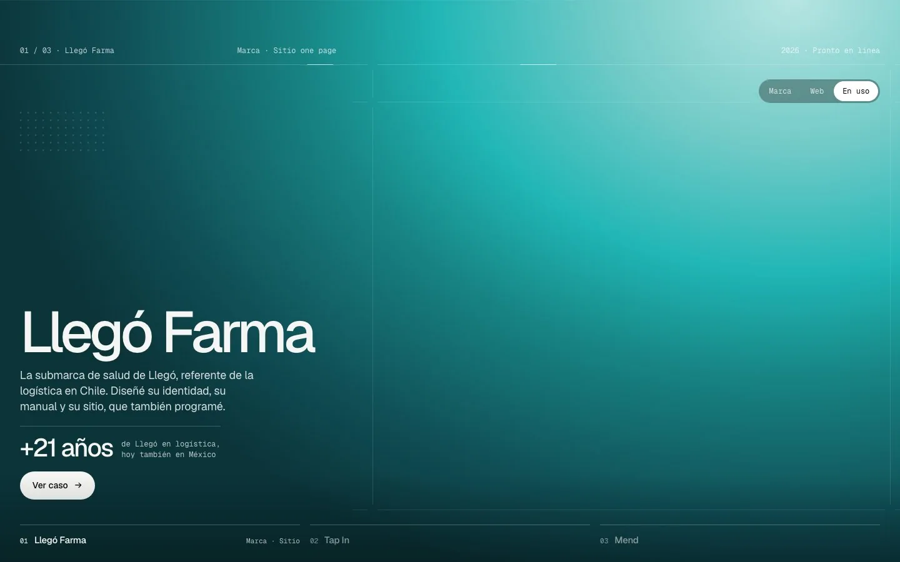
            <div class="vista">
                <div class="uso" data-o="1">
                    <div class="ruta-foto rad sombra"><div class="ruta-lienzo">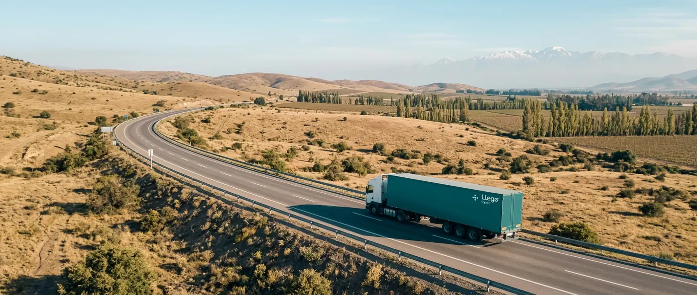
                        <svg viewBox="0 0 900 382" aria-hidden="true"><path class="via" pathLength="1" d="M338 137 C 260 139, 182 144, 165 168 C 150 192, 214 221, 300 247 C 360 265, 410 278, 462 290"/><path class="luz" pathLength="1" d="M338 137 C 260 139, 182 144, 165 168 C 150 192, 214 221, 300 247 C 360 265, 410 278, 462 290"/><circle class="pulso" cx="574" cy="268" r="9"/><circle class="nodo" cx="574" cy="268" r="4"/></svg>
                    </div></div>
                    <div class="seguir">
                        <div class="seguir-cab et"><span>Despacho · Llegó Farma</span><b>En ruta</b></div>
                        <div class="pasos"><i></i><span class="hecho">Retiro</span><span class="ahora">En ruta</span><span>Entrega</span></div>
                    </div>
                </div>
                <div class="uso on" data-o="2">
                    <div class="celda"><span class="iso-f"></span>
                        <div class="celda-et" style="left: calc(var(--u) * 26); top: calc(var(--u) * 24)"><span class="et">Uniforme · Operación</span><b>La marca<br>en terreno</b></div>
                        <div class="celda-et" style="right: calc(var(--u) * 26); bottom: calc(var(--u) * 22); text-align: right"><span class="et">Llegó Farma</span></div>
                    </div>
                    <span class="cruz" style="left: 0; top: calc(var(--u) * 92)"></span><span class="cruz" style="left: 100%; top: calc(var(--u) * 92)"></span><span class="cruz" style="left: 0; top: 100%"></span><span class="cruz" style="left: 100%; top: 100%"></span>
                    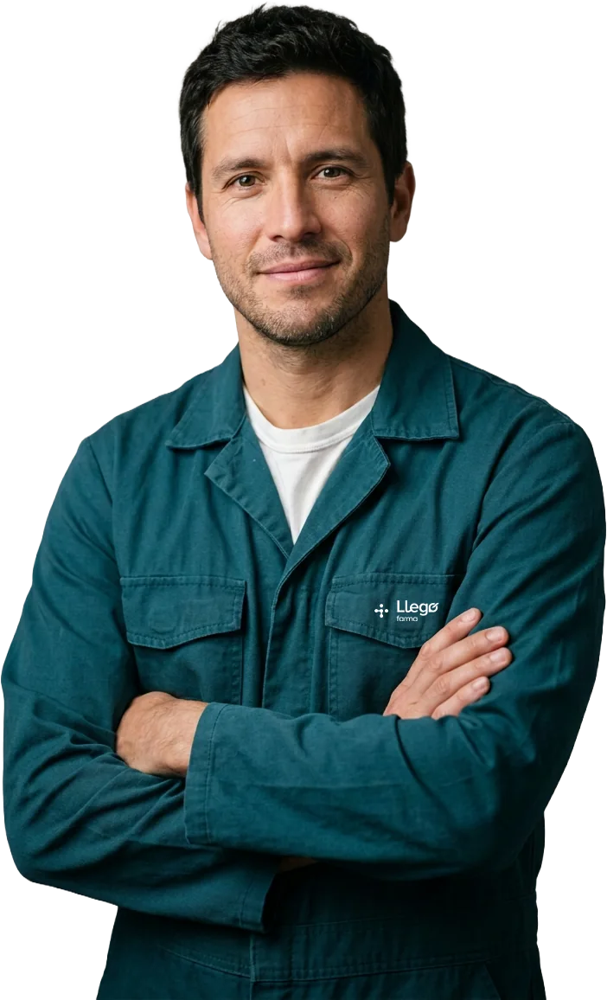
                </div>
                <div class="uso" data-o="3">
                    <div class="tri">
                        <figure><div class="marco sombra"></div><figcaption class="et"><span>01</span><span>Uniforme</span></figcaption></figure>
                        <figure><div class="marco sombra">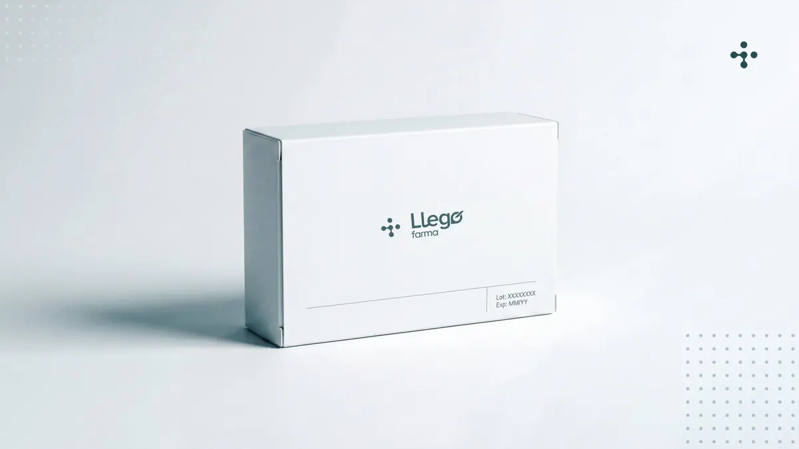</div><figcaption class="et"><span>02</span><span>Empaque</span></figcaption></figure>
                        <figure><div class="marco sombra">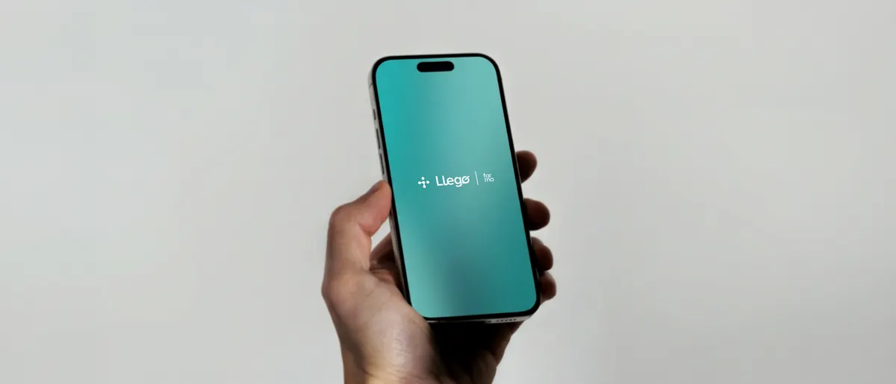</div><figcaption class="et"><span>03</span><span>Pantalla</span></figcaption></figure>
                    </div>
                </div>
                <div class="uso" data-o="4">
                    <div class="sec rad sombra">
                        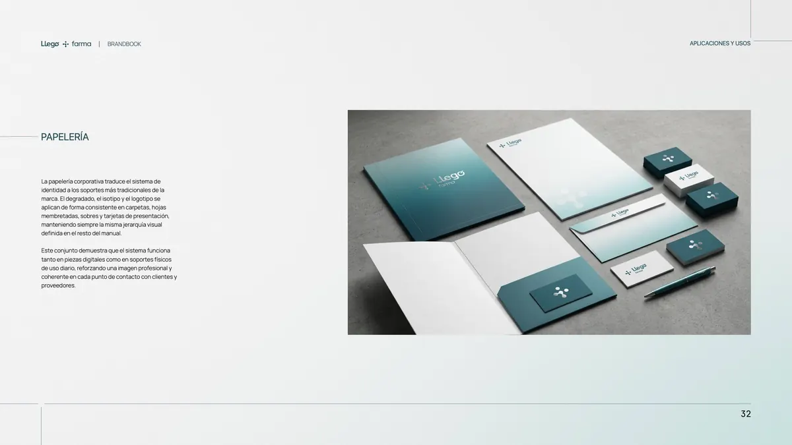
                        <div class="sec-velo"></div>
                        <div class="sec-barras"><i></i><i></i><i></i><i></i><i></i></div>
                        <div class="sec-rot"><span><span class="et">01 / 05</span><b>Flota</b></span><span><span class="et">02 / 05</span><b>Uniforme</b></span><span><span class="et">03 / 05</span><b>Bodega</b></span><span><span class="et">04 / 05</span><b>Papelería</b></span><span><span class="et">05 / 05</span><b>Pantalla</b></span></div>
                    </div>
                </div>
                <div class="uso" data-o="5">
                    <div class="pz-grande rad sombra"></div>
                    <div class="pz-et"><span class="et">En uso</span><b>Del uniforme a la pantalla</b></div>
                    <div class="pz-chica rad sombra"></div>
                </div>
                <div class="uso" data-o="6">
                    <div class="mn-et" style="left: 0; top: 0"><span class="et">Manual · Uniforme</span></div>
                    <div class="mn-pag rad sombra">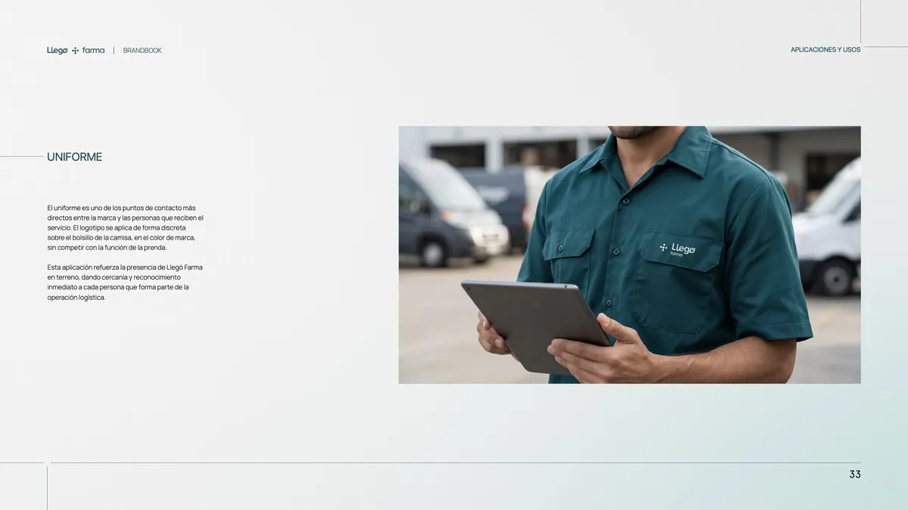</div>
                    <svg class="mn-linea" viewBox="0 0 796 621" preserveAspectRatio="none" aria-hidden="true"><path pathLength="1" d="M450 152 H 560 V 281"/><circle cx="450" cy="152" r="3"/><circle cx="560" cy="281" r="3"/></svg>
                    <div class="mn-et" style="left: calc(var(--u) * 576); top: calc(var(--u) * 136)"><span class="et">En terreno</span><b>Tal como<br>se definió</b></div>
                    <div class="mn-foto rad sombra"></div>
                </div>
            </div>
        </div>
    </div>
</section>

<!-- =======================================================
     MARCAS ANIMADAS
     ======================================================= -->
<section class="proy grilla" aria-labelledby="t-marca">
    <div class="proy-txt">
        <span class="mono">02 · Marca</span>
        <strong id="t-marca">Las dos marcas, en movimiento</strong>
        <p>El logo solo sobre el fondo se veía plano. Ahora cada marca vive en una placa, como las otras vistas, y su animación cuenta la idea de la marca, no un efecto.</p>
        <p>Se dispara al abrir el capítulo Marca, igual que Mend. Con movimiento reducido queda el logo quieto.</p>
    </div>
    <div class="proy-vista dos-marcas">
        <div class="marca-bloque">
            <div class="barra-ctl"><h3>Llegó Farma · Puntos, rutas, nodos</h3><button type="button" class="ctl" data-repetir="lf">Repetir ↻</button></div>
            <p>Los ocho puntos del manual aparecen, se trazan las rutas y los puntos se funden en los tres nodos del isotipo. Recién ahí entra Llegó con un barrido, se levanta la línea y llega farma. Las guías de construcción quedan suaves al fondo.</p>
            <div class="cv anima" data-marca="lf">
                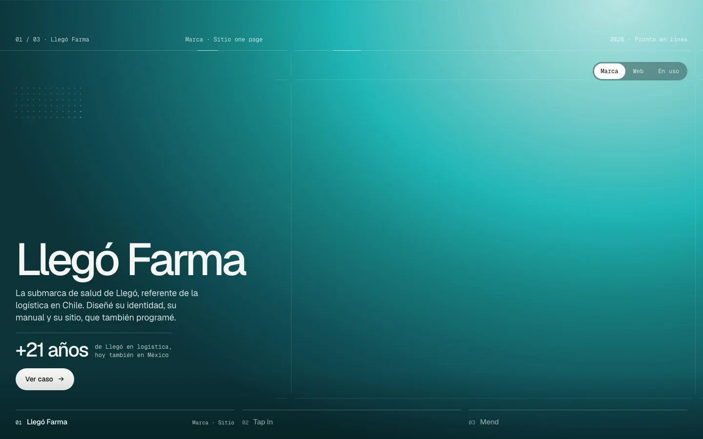
                <div class="vista"><div class="placa lf-placa">
                    <div class="lf-cab et"><span>Marca · Construcción</span><span>Isotipo, wordmark, descriptor</span></div>
                    <svg class="lf-svg" viewBox="-90 -205 616 480" role="img" aria-label="Logo de Llegó Farma"><defs><filter id="lfGoo" x="-20%" y="-20%" width="140%" height="140%"><feGaussianBlur stdDeviation="3.2"/><feColorMatrix values="1 0 0 0 0  0 1 0 0 0  0 0 1 0 0  0 0 0 22 -10"/></filter></defs><g aria-hidden="true"><path class="guia" pathLength="1" style="--k:0" d="M0 -205 V 275"/><path class="guia" pathLength="1" style="--k:1" d="M64.1 -205 V 275"/><path class="guia" pathLength="1" style="--k:2" d="M106.9 -205 V 275"/><path class="guia" pathLength="1" style="--k:3" d="M341.3 -205 V 275"/><path class="guia" pathLength="1" style="--k:4" d="M436.3 -205 V 275"/><path class="guia" pathLength="1" style="--k:2" d="M-90 10.9 H 526"/><path class="guia" pathLength="1" style="--k:3" d="M-90 23.6 H 526"/><path class="guia" pathLength="1" style="--k:4" d="M-90 66.4 H 526"/><text class="cota" x="0" y="-14">ISOTIPO</text><text class="cota" x="106.9" y="-14">WORDMARK</text><text class="cota" x="382" y="-14">DESCRIPTOR</text></g><g transform="translate(0 9.2) scale(0.7262)" aria-hidden="true"><g class="lineas" transform="translate(0 2.2)"><path d="M24.45,83.75c.05-3.64.5-7.22,1.38-10.74,2.31-9.12,7.27-17.19,14.23-23.56l-3.4-3.36c-1.24-1.23-2.53-2.37-3.96-3.39-4.56-3.26-9.95-5.06-15.57-5.18h-4.71s-12.4,0-12.4,0v-5.48s15.64-.01,15.64-.01c9.14-.21,17.86,3.27,24.35,9.67l8.18,8.07-2.64,2.15c-3.01,2.46-5.67,5.31-7.94,8.47-2.87,4-5,8.46-6.29,13.21-.9,3.33-1.36,6.75-1.4,10.19l-5.48-.06Z"/><path d="M17.1,26.92H.01s-.01-5.46-.01-5.46h4.5s12.79-.02,12.79-.02c5.67.1,11.2,1.17,16.45,3.43,1.79-1.44,3.59-2.88,5.17-4.56,2.9-3.09,5.12-6.72,6.62-10.67,1.14-3.1,1.77-6.34,1.91-9.64l5.48.22c-.15,3.64-.81,7.24-2.02,10.69-1.74,4.94-4.5,9.43-8.07,13.26-1.88,1.88-3.87,3.64-6,5.23l-2.43,1.81-1.9-.9c-4.57-2.16-10.28-3.39-15.39-3.39Z"/><path d="M88.27,46.16v5.48s-17.62,0-17.62,0c-4.91-.12-9.69-1.26-14.1-3.41-3.35-1.64-6.42-3.8-9.1-6.4l-7.75-7.55,3.79-3.46c2.03-1.85,3.86-3.88,5.6-6.01,3.05-3.92,5.44-8.31,7-13.04,1.25-3.79,1.89-7.73,1.98-11.74l5.4.11s.05.04.07.08c-.1,4.35-.79,8.65-2.1,12.81-1.74,5.37-4.36,10.4-7.82,14.86-1.8,2.33-3.82,4.44-5.94,6.51l3.98,3.87c1.96,1.9,4.21,3.45,6.64,4.71,3.91,2.04,8.21,3.1,12.63,3.19h17.33Z"/><path d="M54.12,58.86c-8.29,5.79-13.33,14.83-13.44,24.97l-5.49-.08c.04-3.15.47-6.23,1.31-9.25,1.48-5.24,4.12-10.06,7.73-14.14,2.28-2.58,4.88-4.83,7.77-6.69l1.61-1.04,1.61.73c4.67,2.12,9.7,3.24,14.85,3.39h18.18s0,5.49,0,5.49h-17.43c-5.72-.03-11.35-1.16-16.71-3.39Z"/></g><g class="goo" filter="url(#lfGoo)"><circle class="punto" cx="44.16" cy="80.98" r="7.4" style="--k:4;--dx:-0.16px;--dy:-3.98px;--s:1.486"/><circle class="punto" cx="44.08" cy="7.4" r="7.4" style="--k:0;--dx:0.12px;--dy:3.70px;--s:1.486"/><circle class="punto" cx="33.31" cy="27.31" r="7.4" style="--k:7;--dx:3.69px;--dy:13.69px;--s:1.014"/><circle class="punto" cx="54.92" cy="61.09" r="7.4" style="--k:3;--dx:-7.92px;--dy:0.91px;--s:1.014"/><circle class="punto" cx="27.21" cy="55" r="7.4" style="--k:5;--dx:-3.21px;--dy:-8.00px;--s:0.946"/><circle class="punto" cx="7.38" cy="44.21" r="7.4" style="--k:6;--dx:3.62px;--dy:-0.01px;--s:1.486"/><circle class="punto" cx="80.87" cy="44.16" r="7.4" style="--k:2;--dx:-3.67px;--dy:-0.06px;--s:1.486"/><circle class="punto" cx="61.02" cy="33.37" r="7.4" style="--k:1;--dx:-11.02px;--dy:9.63px;--s:1.014"/></g></g><g class="iso-final"><path d="M 39.5625 44.035156 C 41.648438 39.601562 38.1875 33.785156 33.277344 33.214844 C 26.695312 31.953125 23.941406 41.324219 17.160156 37.945312 C 14.140625 36.332031 11.769531 33.039062 8.007812 33.203125 C 3.238281 33.042969 -0.730469 37.710938 0.167969 42.394531 C 0.910156 48.011719 7.957031 50.824219 12.464844 47.554688 C 14.273438 46.378906 15.796875 44.644531 17.871094 43.917969 C 22.324219 42.289062 26.398438 46.109375 28.671875 49.523438 C 31.773438 54.394531 27.949219 57.664062 25.378906 61.484375 C 22.207031 66.832031 26.773438 73.980469 32.980469 73.246094 C 40.316406 72.46875 42.269531 63.78125 37.25 58.925781 L 37.128906 58.78125 C 34.457031 56.054688 33.769531 51.753906 36.351562 48.710938 C 37.464844 47.203125 38.855469 45.769531 39.5625 44.035156 "/><path d="M 24.066406 16.617188 C 23.617188 27.65625 39.695312 28.304688 40.203125 17.3125 L 40.203125 17.121094 C 39.835938 6.890625 25.0625 6.378906 24.066406 16.617188 "/><path d="M 48.015625 40.59375 C 47.566406 51.628906 63.644531 52.28125 64.152344 41.285156 L 64.152344 41.09375 C 63.785156 30.863281 49.007812 30.351562 48.015625 40.59375 "/></g><g class="wm"><path style="--k:0" d="M 140.871094 57.773438 L 140.867188 66.375 L 106.867188 66.363281 L 106.863281 10.941406 L 116.4375 10.941406 L 116.429688 57.785156 Z M 140.871094 57.773438 "/><path style="--k:1" d="M 178.285156 35.878906 C 182.296875 31.796875 188.71875 31.167969 193.449219 34.417969 C 196.226562 36.320312 197.734375 39.425781 197.796875 42.894531 L 175.53125 42.898438 C 175.375 40.28125 176.410156 37.785156 178.285156 35.878906 M 192.964844 59.589844 C 189.414062 60.78125 185.777344 60.523438 182.367188 59.0625 C 178.21875 57.289062 175.933594 53.863281 175.429688 49.222656 L 206.949219 49.21875 C 206.5 44.535156 205.863281 39.8125 203.9375 35.664062 C 201.964844 31.453125 198.605469 28.238281 194.238281 26.59375 C 183.355469 22.496094 171.496094 27.515625 167.5625 38.378906 C 165.605469 43.792969 165.664062 49.679688 167.816406 55.136719 L 160.6875 58.738281 C 159.652344 59.261719 158.601562 59.648438 157.417969 59.679688 C 154.703125 59.679688 153.675781 57.457031 153.566406 54.699219 L 153.5625 10.882812 L 144.902344 10.886719 L 144.894531 49.113281 L 144.925781 57.808594 C 144.9375 62.019531 147.195312 66.042969 151.375 67.328125 C 155.488281 68.605469 159.921875 68.25 163.890625 66.460938 C 166.90625 65.101562 169.648438 63.515625 172.519531 61.917969 C 178.828125 67.921875 187.089844 68.410156 195.214844 66.378906 C 198.386719 65.417969 201.230469 63.871094 203.617188 61.574219 L 199.691406 55.972656 C 197.570312 57.546875 195.414062 58.792969 192.964844 59.589844 "/><path style="--k:2" d="M 241.1875 51.777344 C 241.1875 52.914062 240.859375 53.859375 240.148438 54.621094 C 237.996094 56.921875 235.164062 58.425781 232.003906 58.742188 C 226.550781 59.289062 221.707031 56.019531 220.207031 50.789062 C 219.214844 47.320312 219.261719 43.726562 220.417969 40.308594 C 222 35.640625 226.339844 32.746094 231.269531 32.9375 C 233.832031 33.035156 236.054688 33.992188 238.148438 35.382812 C 239.703125 36.414062 240.792969 37.792969 241.074219 39.691406 L 241.203125 44.09375 Z M 249.875 26.199219 L 242.085938 26.183594 C 241.515625 26.179688 241.15625 26.554688 241.152344 27.117188 L 241.199219 30.742188 C 241.203125 31.003906 241.121094 31.203125 240.964844 31.3125 C 240.460938 31.664062 240.566406 30.847656 239.328125 29.679688 C 232.792969 23.523438 222.128906 23.554688 215.910156 30.214844 C 209.414062 37.171875 208.863281 48.164062 212.539062 56.613281 C 216.230469 65.09375 225.871094 68.828125 234.328125 65.1875 C 236.925781 64.070312 239.023438 62.347656 240.960938 60.234375 L 241.066406 66.113281 C 240.929688 68.988281 239.75 71.511719 237.40625 73.1875 C 233.878906 75.707031 229.769531 75.832031 225.472656 75.308594 C 221.929688 74.878906 218.832031 73.097656 216.5 70.433594 L 212.429688 76.78125 C 219.382812 83.308594 228.949219 83.976562 237.851562 81.574219 C 243.648438 80.007812 248.257812 75.800781 249.402344 69.839844 C 249.691406 68.328125 249.878906 66.960938 249.878906 65.355469 Z M 249.875 26.199219 "/><path style="--k:3" d="M 276.484375 66.28125 L 254.914062 66.375 C 254.449219 66.375 254.003906 65.972656 254.007812 65.539062 L 254.039062 55.980469 L 254 44.453125 C 254.242188 33.273438 263.09375 24.1875 274.234375 23.644531 C 278.167969 23.453125 281.90625 24.238281 285.398438 26.097656 L 278.890625 32.214844 C 270.757812 30.003906 262.753906 35.683594 262.132812 43.984375 C 261.507812 52.308594 268.699219 59.222656 277.097656 58.109375 C 285.148438 57.042969 290.617188 48.757812 287.878906 40.722656 L 294.179688 34.777344 C 297.695312 41.433594 297.660156 49.355469 293.664062 56.039062 C 290.226562 61.785156 283.75 66.066406 276.484375 66.28125 "/><path style="--k:4" d="M 282.394531 43.382812 C 278.699219 45.902344 273.460938 46.050781 268.886719 45.46875 L 288.183594 27.386719 C 291.816406 23.984375 298.382812 22.257812 303.171875 23.964844 Z M 282.394531 43.382812 "/></g><path class="divisor" d="M 343.058594 82.488281 L 339.484375 82.488281 L 339.484375 0 L 343.058594 0 Z M 343.058594 82.488281 "/><g class="farma"><path d="M 389.292969 26.664062 L 389.289062 42.585938 L 385.9375 42.546875 L 385.933594 26.667969 L 382.199219 26.652344 L 382.203125 23.710938 L 385.933594 23.703125 C 385.890625 21.261719 385.871094 18.722656 387.863281 17.25 C 389.699219 15.890625 392.296875 15.976562 394.605469 16.304688 L 394.632812 19.140625 C 392.34375 18.976562 389.640625 18.691406 389.375 21.070312 C 389.28125 21.941406 389.289062 22.78125 389.285156 23.707031 L 394.609375 23.707031 L 394.652344 26.644531 Z M 389.292969 26.664062 "/><path d="M 404.460938 39.960938 C 406.464844 40.125 408.425781 39.277344 409.734375 37.859375 C 412.460938 34.910156 412.074219 28.863281 407.734375 26.863281 C 405.910156 26.023438 403.917969 26.027344 402.089844 26.863281 C 398.789062 28.375 397.582031 32.542969 398.933594 35.898438 C 399.863281 38.21875 401.867188 39.75 404.460938 39.960938 M 414.761719 42.53125 L 411.695312 42.578125 L 411.539062 39.585938 L 410.71875 40.480469 C 409.027344 42.324219 406.644531 42.933594 404.226562 42.882812 C 398.777344 42.769531 394.917969 38.269531 394.988281 32.957031 C 395.054688 27.785156 398.757812 23.417969 404.085938 23.390625 L 405.261719 23.382812 C 407.785156 23.527344 410.011719 24.628906 411.515625 26.726562 L 411.574219 23.714844 L 414.757812 23.703125 Z M 414.761719 42.53125 "/><path d="M 421.207031 28.042969 L 421.203125 42.566406 L 417.972656 42.574219 L 418.003906 27.597656 C 418.003906 26.421875 418.613281 25.253906 419.496094 24.589844 C 420.140625 24.101562 421.042969 23.75 421.855469 23.742188 L 427.738281 23.703125 L 427.742188 26.65625 L 421.558594 26.648438 C 421.375 26.75 421.25 27.035156 421.242188 27.226562 Z M 421.207031 28.042969 "/><path d="M 402.949219 51.304688 C 402.234375 52.191406 401.785156 53.351562 401.785156 54.53125 L 401.753906 66.070312 L 398.421875 66.054688 L 398.363281 54.042969 C 398.355469 52.675781 397.730469 51.355469 396.695312 50.5625 C 395.292969 49.492188 393.398438 49.480469 391.835938 50.285156 C 389.882812 51.289062 389.339844 53.660156 389.335938 55.875 L 389.316406 66.074219 L 385.945312 66.042969 L 385.941406 47.210938 L 388.980469 47.1875 L 389.070312 49.75 C 390.378906 48.015625 392.015625 46.925781 394.148438 46.890625 L 395.0625 46.878906 C 397.460938 46.835938 399.613281 47.953125 400.75 50.289062 C 401.695312 48.382812 404.226562 46.886719 406.101562 46.875 L 407.671875 46.867188 C 411.347656 46.84375 414.152344 50.019531 414.167969 53.808594 L 414.210938 66.054688 L 410.867188 66.070312 L 410.828125 54.699219 C 410.824219 53.289062 410.421875 51.898438 409.484375 50.890625 C 408.011719 49.3125 404.65625 49.183594 402.949219 51.304688 "/><path d="M 432.929688 57.234375 L 432.929688 55.761719 C 432.636719 52.503906 430.125 49.902344 426.839844 49.734375 C 424.054688 49.59375 421.597656 51.007812 420.488281 53.59375 C 419.671875 55.503906 419.722656 57.8125 420.578125 59.699219 C 421.507812 61.742188 423.269531 62.980469 425.414062 63.382812 C 428.945312 64.046875 432.6875 61.324219 432.929688 57.234375 M 436.328125 66.035156 L 433.175781 66.082031 L 433.050781 63.015625 C 431.410156 65.253906 429.210938 66.230469 426.570312 66.371094 C 421.332031 66.65625 416.90625 62.796875 416.582031 57.519531 C 416.511719 56.359375 416.550781 55.191406 416.820312 53.992188 C 417.421875 51.3125 419.242188 49.039062 421.671875 47.832031 C 422.890625 47.230469 424.054688 46.839844 425.378906 46.855469 L 426.84375 46.875 C 428.765625 46.898438 430.714844 47.605469 432.007812 49.054688 L 433.019531 50.191406 L 433.15625 47.195312 L 436.316406 47.199219 Z M 436.328125 66.035156 "/></g></svg>
                    <div class="lf-pie et"><span>01 Puntos</span><span>02 Rutas</span><span>03 Nodos</span></div>
                </div></div>
            </div>
        </div>
        <div class="marca-bloque">
            <div class="barra-ctl"><h3>Tap In · Cada tap abre un producto</h3><button type="button" class="ctl" data-repetir="tp">Repetir ↻</button></div>
            <p>Las letras suben en cascada y el punto de la i cae y hace tap. Desde ahí, cada tap suelta una onda con el tono del producto siguiente que llena la placa, y cambian el isotipo y el nombre. El wordmark no se mueve: es la regla de la marca.</p>
            <div class="cv anima" data-marca="tp">
                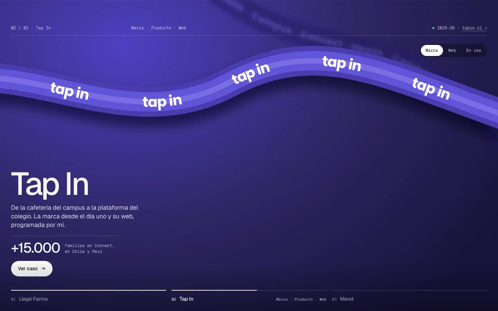
                <div class="vista"><div class="placa tp-placa">
                    <div class="tp-sig"></div>
                    <div class="tp-cab et"><span data-tp-n>01 / 03 · Campus</span><span data-tp-hex>#4A3CAE</span></div>
                    <div class="tp-lock">
                        <span class="tp-iso"><span data-i="0"><span class="m" style="--svg:url('tp-forky.svg')"></span></span><span data-i="1"><span class="m" style="--svg:url('tp-cerebro.svg')"></span></span><span data-i="2"><span class="orbita"></span></span></span>
                        <svg class="tp-wm" viewBox="0 -24 389.87 174.6" role="img" aria-label="tap in"><path class="l" style="--k:0" d="M40.67,87.8c-5.84,0-10.58-4.75-10.58-10.62h.03v-12.91h14.7v-30.1h-14.7V14H.14v20.17h-.14v30.1l.02,12.91C.02,99.72,18.22,117.99,40.67,117.99c1.4,0,2.78-.07,4.15-.21v-30.83c-1.27.55-2.67.85-4.15.85Z"/><path class="l" style="--k:1" d="M108.81,35.52v3.81c-5.86-3.29-12.61-5.17-19.79-5.17-22.44,0-40.64,18.26-40.64,40.79s18.19,40.79,40.64,40.79c7.19,0,13.94-1.88,19.79-5.17v5.17h29.84V35.52h-29.84ZM108.8,76.8c-.2,8.74-7.32,15.77-16.07,15.77s-16.08-7.23-16.08-16.14,7.2-16.14,16.08-16.14c8.23,0,15.01,6.21,15.96,14.21h.12v2.31h0Z"/><path class="l" style="--k:2" d="M193.83,34.17c-7.19,0-13.94,1.88-19.79,5.17v-3.81h-29.84v115.08h29.84v-40.01c5.86,3.29,12.61,5.17,19.79,5.17,22.44,0,40.64-18.26,40.64-40.79s-18.19-40.79-40.64-40.79ZM190.12,92.57c-8.76,0-15.87-7.03-16.07-15.77h0v-2.31h.04v.87c.55-8.42,7.52-15.07,16.04-15.07s16.08,7.23,16.08,16.14-7.2,16.14-16.08,16.14Z"/><rect class="l" style="--k:3" x="262.57" y="35.52" width="29.99" height="80.23"/><path class="l" style="--k:4" d="M389.87,78.96c0-23.99-19.37-43.44-43.28-43.44-6.68,0-13,1.52-18.64,4.23v-4.23h-29.99v80.23h29.99v-36.73h.08c.75-8.15,7.57-14.52,15.89-14.52s15.13,6.38,15.89,14.52h.08v36.73h29.99v-36.65h0s0-.09,0-.14Z"/><rect class="punto" x="262.57" y="0" width="29.99" height="30.11" rx="12.55"/><circle class="onda" cx="277.57" cy="15.05" r="15"/></svg>
                        <span class="tp-nom"><span data-i="0">Campus</span><span data-i="1">Connect</span><span data-i="2">Health</span></span>
                    </div>
                    <div class="tp-pie et"><span>El wordmark nunca cambia</span><span>Cambian el isotipo, el nombre y el tono</span></div>
                </div></div>
            </div>
        </div>
    </div>
</section>

<!-- =======================================================
     TRANSICIONES
     ======================================================= -->
<section class="proy grilla" aria-labelledby="t-paso">
    <div class="proy-txt">
        <span class="mono">03 · Paso entre destacados</span>
        <strong id="t-paso">Siete transiciones y la actual</strong>
        <p>Todas van atadas al scroll, como hoy: avanzan y retroceden con la mano. Haz scroll sobre la portada o arrastra la barra.</p>
        <p>Recomiendo la ventana que se abre: el trabajo del proyecto siguiente aparece primero y después se vuelve la portada entera. Cuenta que el trabajo manda, y no se parece a nada de plantilla.</p>
    </div>
    <div class="proy-vista">
        <div class="botones cuatro" data-grupo="paso">
            <button type="button" class="op" aria-pressed="false" data-o="actual"><span class="mono">00</span><b>Actual</b>Cortina desde abajo; la anterior se achica y oscurece.</button>
            <button type="button" class="op" aria-pressed="true" data-o="ventana"><span class="mono">01</span><b>Ventana que se abre</b>Aparece la pieza del siguiente y crece hasta ser la portada.<span class="rec">Recomendada</span></button>
            <button type="button" class="op" aria-pressed="false" data-o="persiana"><span class="mono">02</span><b>Persiana de retícula</b>Las doce columnas de la grilla suben en cascada.</button>
            <button type="button" class="op" aria-pressed="false" data-o="tarjeta"><span class="mono">03</span><b>Tarjeta que se apila</b>Sube como tarjeta y se expande; la anterior se va atrás.</button>
            <button type="button" class="op" aria-pressed="false" data-o="iris"><span class="mono">04</span><b>Iris desde la regla</b>Un círculo nace del número del proyecto en la regla.</button>
            <button type="button" class="op" aria-pressed="false" data-o="empuje"><span class="mono">05</span><b>Empuje con paralaje</b>La siguiente empuja a la anterior; su imagen va más lenta.</button>
            <button type="button" class="op" aria-pressed="false" data-o="fundido"><span class="mono">06</span><b>Fundido con foco</b>Entra desenfocada y un poco grande, y se asienta.</button>
            <button type="button" class="op" aria-pressed="false" data-o="diagonal"><span class="mono">07</span><b>Corte diagonal</b>Un corte inclinado barre de abajo hacia arriba.</button>
        </div>
        <div class="cv escena" data-escena aria-label="Demostración de la transición entre portadas">
            <div class="capa">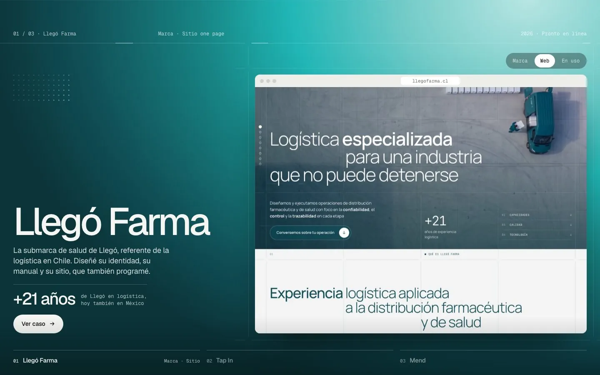</div>
            <div class="capa">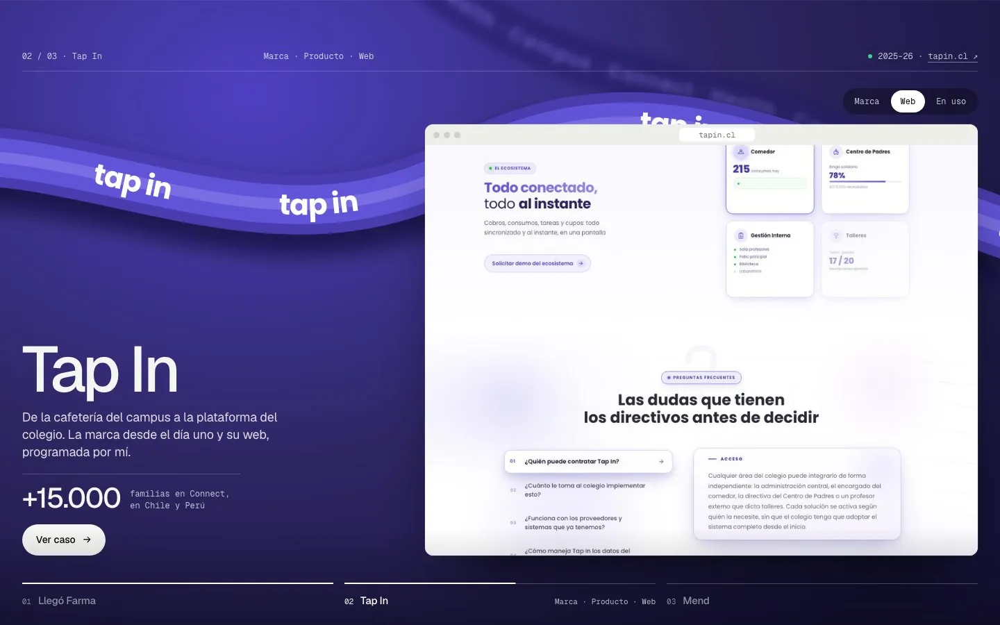</div>
            <div class="capa">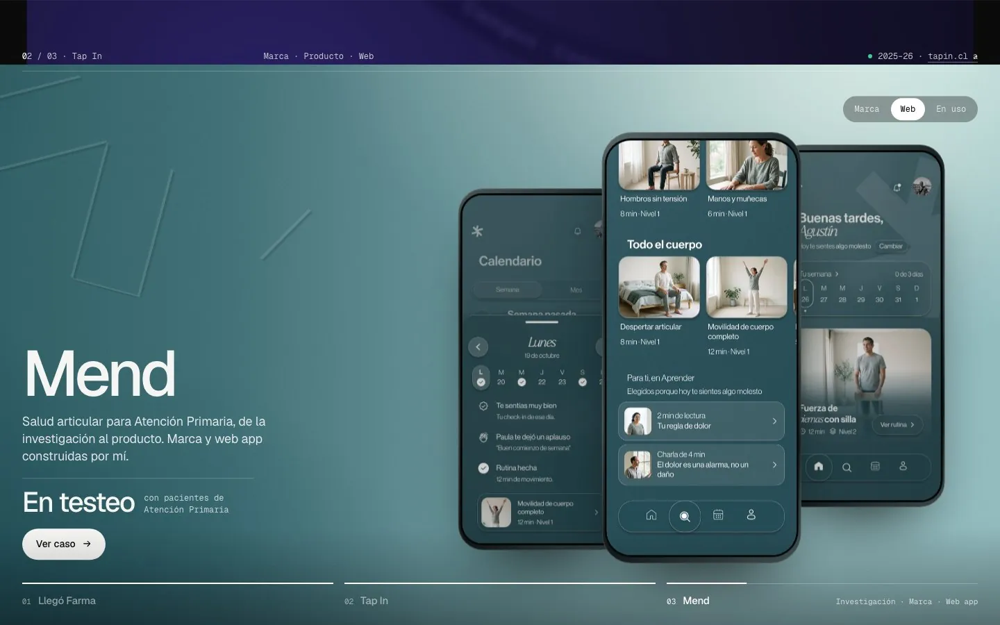</div>
        </div>
        <div class="pista-ctl">
            <button type="button" class="ctl" data-play aria-pressed="true">Pausa</button>
            <label for="avance" class="mono">Avance</label>
            <input id="avance" type="range" min="0" max="200" value="0">
            <output for="avance" data-salida>Llegó</output>
        </div>
        <p class="nota">En el home el avance lo da el scroll: lo que ves con la barra es exactamente lo que pasaría al bajar.</p>
    </div>
</section>

<script>
/* =======================================================
   COMPARADOR · DESTACADOS RONDA 4
   ======================================================= */
(function () {
    const quieto = matchMedia('(prefers-reduced-motion: reduce)').matches;
    const fijar = v => Math.min(1, Math.max(0, v));
    const io = (t) => t < 0.5 ? 4 * t * t * t : 1 - Math.pow(-2 * t + 2, 3) / 2;

    /* --- 1. GRUPOS DE OPCIONES --- */
    /* Cada botón marca su opción; En uso muestra su panel y Transiciones cambia el efecto */
    let efecto = 'ventana';
    document.querySelectorAll('[data-grupo]').forEach(g => g.addEventListener('click', e => {
        const b = e.target.closest('.op'); if (!b) return;
        g.querySelectorAll('.op').forEach(x => x.setAttribute('aria-pressed', x === b));
        if (g.dataset.grupo === 'uso') document.querySelectorAll('[data-uso] .uso').forEach(u => u.classList.toggle('on', u.dataset.o === b.dataset.o));
        else { efecto = b.dataset.o; pintar(); }
    }));

    /* --- 2. MARCAS: DISPARO Y REPETICIÓN --- */
    /* La animación corre al entrar en pantalla y con Repetir (se quita la clase, se fuerza un reflow y vuelve) */
    const marcas = {};
    document.querySelectorAll('[data-marca]').forEach(m => { marcas[m.dataset.marca] = m; m.classList.remove('anima'); });
    const correr = k => { const m = marcas[k]; m.classList.remove('anima'); void m.offsetWidth; m.classList.add('anima'); if (k === 'tp') tapInicio(); };
    const vistas = new IntersectionObserver(es => es.forEach(e => { if (e.isIntersecting) { correr(e.target.dataset.marca); vistas.unobserve(e.target); } }), { threshold: 0.45 });
    Object.values(marcas).forEach(m => vistas.observe(m));
    document.querySelectorAll('[data-repetir]').forEach(b => b.addEventListener('click', () => correr(b.dataset.repetir)));

    /* --- 3. TAP IN: EL CICLO DE PRODUCTOS --- */
    /* Primero centra el wordmark solo; al terminar el tap abre el lockup y cada 2,8 s una onda del tono siguiente nace del punto */
    const tp = marcas.tp, placa = tp.querySelector('.tp-placa'), lock = tp.querySelector('.tp-lock'), sig = tp.querySelector('.tp-sig');
    const punto = tp.querySelector('.tp-wm .punto'), onda = tp.querySelector('.tp-wm .onda'), wm = tp.querySelector('.tp-wm');
    const prods = [['Campus', '#4A3CAE'], ['Connect', '#6B5CE7'], ['Health', '#9B8EF0']];
    let reloj = [], actual = 0;
    const centrar = () => { const p = placa.getBoundingClientRect(), w = wm.getBoundingClientRect(); return (p.left + p.width / 2) - (w.left + w.width / 2); };
    const marcar = i => { tp.querySelectorAll('.tp-iso > span, .tp-nom > span').forEach(s => s.classList.toggle('on', +s.dataset.i === i)); tp.querySelector('[data-tp-n]').textContent = `0${i + 1} / 03 · ${prods[i][0]}`; tp.querySelector('[data-tp-hex]').textContent = prods[i][1]; };
    const tap = () => { [punto, onda].forEach(x => { x.classList.remove('tap'); void x.getBoundingClientRect(); x.classList.add('tap'); }); };
    const siguiente = () => {
        const n = (actual + 1) % prods.length, p = placa.getBoundingClientRect(), d = punto.getBoundingClientRect();
        tap();
        sig.style.setProperty('--ox', `${((d.left + d.width / 2 - p.left) / p.width) * 100}%`);
        sig.style.setProperty('--oy', `${((d.top + d.height / 2 - p.top) / p.height) * 100}%`);
        sig.style.setProperty('--sig', prods[n][1]);
        sig.classList.add('abre');
        reloj.push(setTimeout(() => marcar(n), 260));
        reloj.push(setTimeout(() => { placa.style.setProperty('--tono', prods[n][1]); sig.classList.remove('abre'); actual = n; }, 1050));
    };
    function tapInicio() {
        reloj.forEach(clearTimeout); clearInterval(reloj.ciclo); reloj = []; actual = 0;
        placa.style.setProperty('--tono', prods[0][1]); sig.classList.remove('abre');
        tp.querySelectorAll('.tp-iso > span, .tp-nom > span').forEach(s => s.classList.remove('on'));
        tp.querySelector('[data-tp-n]').textContent = '01 / 03 · Campus'; tp.querySelector('[data-tp-hex]').textContent = prods[0][1];
        lock.style.transition = 'none'; lock.style.setProperty('--desp', '0px');
        const d = centrar(); lock.style.setProperty('--desp', `${d}px`); void lock.offsetWidth; lock.style.transition = '';
        reloj.push(setTimeout(() => { lock.style.setProperty('--desp', '0px'); marcar(0); }, 2100));
        if (!quieto) reloj.ciclo = setInterval(siguiente, 2800);
    }

    /* --- 4. TRANSICIONES: EL MOTOR --- */
    /* p va de 0 a 2. Para cada par, t es el avance local; el efecto elegido escribe los estilos de la siguiente
       (sig) y de la anterior (ant). La vista (la ventana del navegador) está en 612, 179, 796 x 621 sobre 1440 x 900 */
    const escena = document.querySelector('[data-escena]'), capas = [...escena.querySelectorAll('.capa')];
    const rango = document.getElementById('avance'), salida = document.querySelector('[data-salida]'), btnPlay = document.querySelector('[data-play]');
    const V = { t: 179 / 900 * 100, r: (1440 - 1408) / 1440 * 100, b: (900 - 800) / 900 * 100, l: 612 / 1440 * 100 };
    const REGLA = [32 / 1440 * 100, 496 / 1440 * 100, 960 / 1440 * 100];
    const efectos = {
        actual(s, a, t, k) { const e = io(t); s.clip = `inset(${(1 - e) * 100}% 0 0 0)`; a.transform = `scale(${1 - 0.06 * e})`; a.filter = `brightness(${1 - 0.45 * e})`; },
        ventana(s, a, t) {
            const f1 = io(fijar(t / 0.42)), f2 = io(fijar((t - 0.42) / 0.58)), lerp = (x, y) => x + (y - x) * f2;
            const sube = (1 - f1) * 14;
            s.clip = `inset(${lerp(V.t + sube, 0)}% ${lerp(V.r, 0)}% ${lerp(Math.max(0, V.b - sube), 0)}% ${lerp(V.l, 0)}% round ${(1 - f2) * 1.1}cqw)`;
            s.opacity = Math.min(1, f1 * 1.6); s.img = `scale(${1.04 - 0.04 * f2})`;
            a.filter = `brightness(${1 - 0.5 * f2})`; a.transform = `scale(${1 - 0.03 * f2})`;
        },
        persiana(s, a, t) {
            const n = 12, pts = ['0% 100%'];
            for (let c = 0; c < n; c++) { const lt = io(fijar((t - c * 0.035) / (1 - (n - 1) * 0.035))), y = (1 - lt) * 100, x0 = c / n * 100, x1 = (c + 1) / n * 100; pts.push(`${x0}% 100%`, `${x0}% ${y}%`, `${x1}% ${y}%`, `${x1}% 100%`); }
            s.clip = `polygon(${pts.join(',')})`; a.filter = `brightness(${1 - 0.4 * io(t)})`;
        },
        tarjeta(s, a, t) {
            const f1 = io(fijar(t / 0.55)), f2 = io(fijar((t - 0.55) / 0.45)), esc = 0.9 + 0.1 * f2;
            s.transform = `translateY(${(1 - f1) * 105}%) scale(${esc})`; s.radio = `${(1 - f2) * 1.6}cqw`;
            a.transform = `scale(${1 - 0.07 * io(t)})`; a.filter = `brightness(${1 - 0.55 * io(t)})`; a.radio = `${io(t) * 1.6}cqw`;
        },
        iris(s, a, t, k) { const e = io(t); s.clip = `circle(${e * 125}% at ${REGLA[k] + 3}% 95.5%)`; a.filter = `brightness(${1 - 0.4 * e})`; },
        empuje(s, a, t) { const e = io(t); s.transform = `translateY(${(1 - e) * 100}%)`; s.img = `translateY(${-(1 - e) * 35}%)`; a.transform = `translateY(${-e * 30}%)`; a.filter = `brightness(${1 - 0.5 * e})`; },
        fundido(s, a, t) { const e = io(t); s.opacity = e; s.transform = `scale(${1.07 - 0.07 * e})`; s.filter = `blur(${(1 - e) * 10}px)`; a.transform = `scale(${1 - 0.03 * e})`; },
        diagonal(s, a, t) { const e = io(t), y = (1 - e) * 140; s.clip = `polygon(0% ${y}%, 100% ${y - 40}%, 100% 100%, 0% 100%)`; a.filter = `brightness(${1 - 0.4 * e})`; }
    };
    let p = 0;
    function pintar() {
        const aplicar = (el, o) => { if (o.clip) el.style.clipPath = o.clip; if (o.transform) el.style.transform = o.transform; if (o.filter) el.style.filter = o.filter; if (o.opacity !== undefined) el.style.opacity = o.opacity; if (o.radio) el.style.borderRadius = o.radio; if (o.img) el.firstElementChild.style.transform = o.img; };
        capas.forEach((c, i) => { c.style.cssText = `z-index:${i}`; c.firstElementChild.style.transform = ''; c.classList.toggle('oculta', i > 0 && p <= i - 1); });
        for (let k = 1; k < capas.length; k++) {
            const t = fijar(p - (k - 1)); if (t <= 0) continue;
            const s = {}, a = {}; efectos[efecto](s, a, t, k);
            aplicar(capas[k], s); aplicar(capas[k - 1], a);
            if (t >= 1) capas[k - 1].style.visibility = 'hidden';
        }
        rango.value = Math.round(p * 100);
        salida.textContent = p < 0.5 ? 'Llegó' : p < 1.5 ? 'Tap In' : 'Mend';
    }
    rango.addEventListener('input', () => { parar(); p = rango.value / 100; pintar(); });
    escena.addEventListener('wheel', e => { e.preventDefault(); parar(); p = Math.min(2, Math.max(0, p + e.deltaY * 0.0012)); pintar(); }, { passive: false });
    let toque = null;
    escena.addEventListener('pointerdown', e => { toque = e.clientY; parar(); escena.setPointerCapture(e.pointerId); });
    escena.addEventListener('pointermove', e => { if (toque === null) return; p = Math.min(2, Math.max(0, p + (toque - e.clientY) / escena.clientHeight * 1.4)); toque = e.clientY; pintar(); });
    escena.addEventListener('pointerup', () => { toque = null; });

    /* --- 5. TRANSICIONES: REPRODUCCIÓN --- */
    /* Va y vuelve: pausa en cada portada, avanza en 1,1 s, y al final retrocede igual, como quien sube */
    const guion = [[0, 900], [1, 1100], [1, 900], [2, 1100], [2, 900], [1, 1100], [1, 900], [0, 1100]];
    let anda = !quieto, paso = 0, desde = 0, t0 = 0, raf = 0;
    function cuadro(ts) {
        if (!anda) return;
        if (!t0) { t0 = ts; desde = p; }
        const [meta, dur] = guion[paso], f = fijar((ts - t0) / dur);
        p = desde + (meta - desde) * f; pintar();
        if (f >= 1) { paso = (paso + 1) % guion.length; t0 = 0; }
        raf = requestAnimationFrame(cuadro);
    }
    function parar() { anda = false; cancelAnimationFrame(raf); btnPlay.textContent = 'Reproducir'; btnPlay.setAttribute('aria-pressed', 'false'); }
    btnPlay.addEventListener('click', () => { if (anda) { parar(); return; } anda = true; t0 = 0; btnPlay.textContent = 'Pausa'; btnPlay.setAttribute('aria-pressed', 'true'); raf = requestAnimationFrame(cuadro); });
    pintar();
    if (anda) raf = requestAnimationFrame(cuadro); else { btnPlay.textContent = 'Reproducir'; btnPlay.setAttribute('aria-pressed', 'false'); }
})();
/* =======================================================
   FIN COMPARADOR · DESTACADOS RONDA 4
   ======================================================= */
</script>
